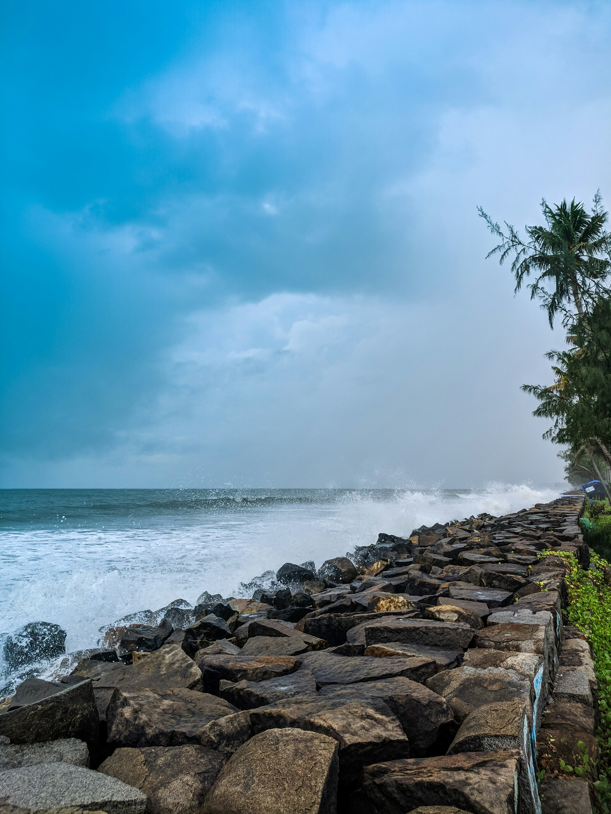
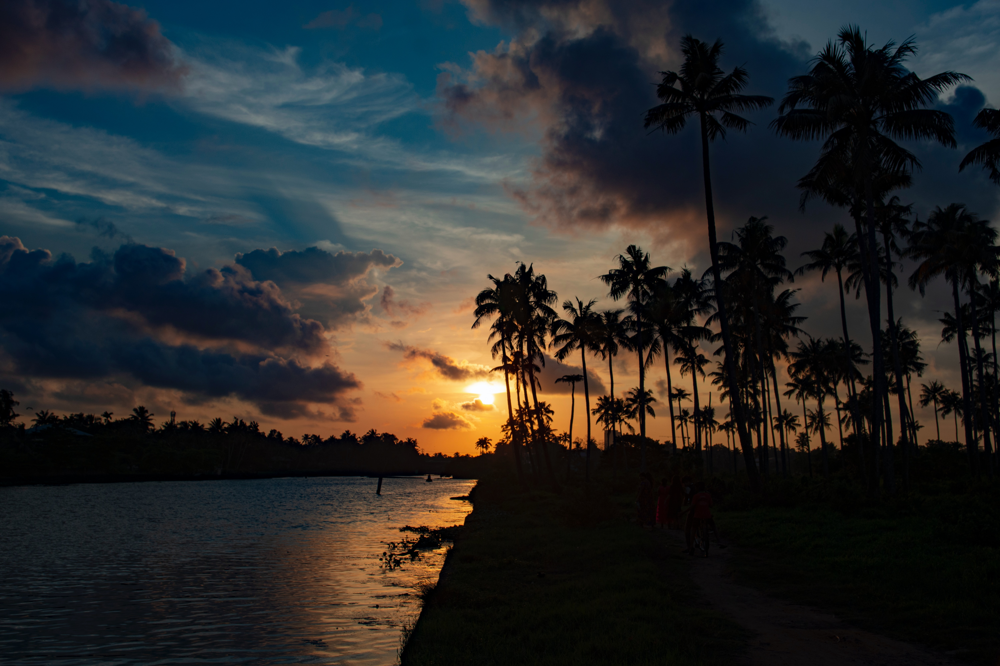
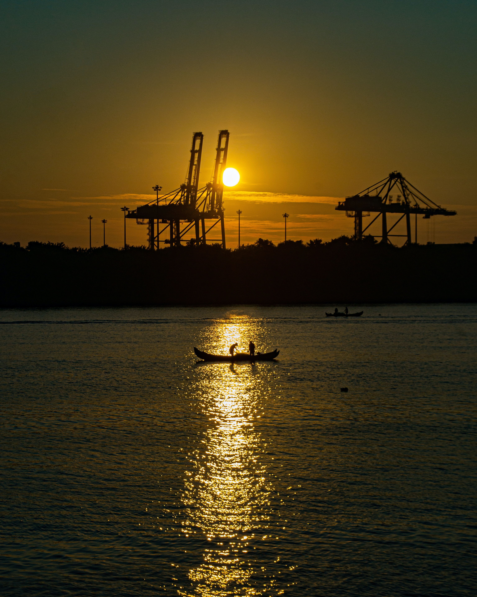

Kochi, also known as Cochin, is a vibrant port city situated on the southwest coast of India in the state of Kerala. With a history dating back to ancient times, Kochi has been a significant center for trade and commerce, attracting merchants and explorers from around the world. The city's strategic location along the Arabian Sea made it a focal point for spice trade, drawing Arab, Chinese, Portuguese, Dutch, and British influences over the centuries.
One of the highlights of Kochi is its diverse cultural and architectural heritage. Fort Kochi, a historic district within the city, is characterized by its colonial-era buildings, ancient churches, and synagogues. The iconic Chinese fishing nets along the waterfront are a testament to the city's cultural fusion. The Mattancherry Palace, also known as the Dutch Palace, showcases a blend of Kerala and colonial architecture and houses a collection of murals depicting Hindu temple art, portraits, and exhibits related to the history of the region. Kochi is also recognized for its cosmopolitan atmosphere and thriving arts scene. The city hosts numerous festivals, including the Kochi-Muziris Biennale, one of the largest contemporary art exhibitions in Asia. The vibrant street life, bustling markets, and the scenic backdrop of the backwaters contribute to Kochi's unique charm. Today, Kochi stands as a bustling metropolis that seamlessly blends its rich history with modernity, making it a popular destination for tourists and a significant economic hub in the region.  Kochi, historically known as Cochin, has a rich and diverse history that spans centuries. The city's origins can be traced back to ancient times when it served as a prominent trading post and port for merchants from various parts of the world. Kochi's strategic location along the Arabian Sea made it a crucial center for the spice trade, attracting Arab, Chinese, and European traders. In the 15th century, the Portuguese explorer Vasco da Gama arrived in Kochi, marking the beginning of European colonial influence. The Portuguese established a fort in the area and played a significant role in shaping the region's cultural and architectural landscape.
Subsequently, Kochi witnessed the dominance of the Dutch and later the British, each leaving their mark on the city. The Mattancherry Palace, built by the Portuguese and later renovated by the Dutch, stands as a testament to this colonial legacy. The city also became a melting pot of cultures and religions, with the presence of Jewish, Christian, Hindu, and Muslim communities. Over the years, Kochi evolved into a cosmopolitan hub, embracing influences from different civilizations. Today, the city's historic sites, such as Fort Kochi and its colonial-era architecture, stand as reminders of its fascinating past and contribute to its status as a culturally rich and dynamic urban center in Kerala.